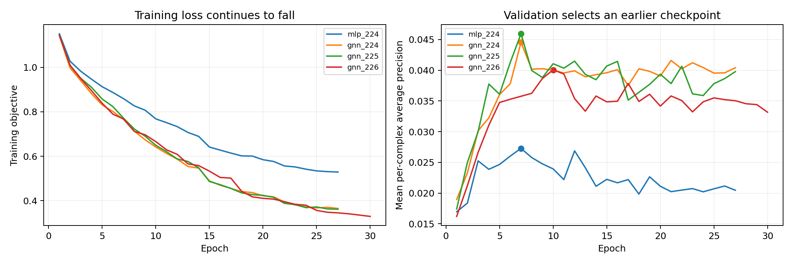
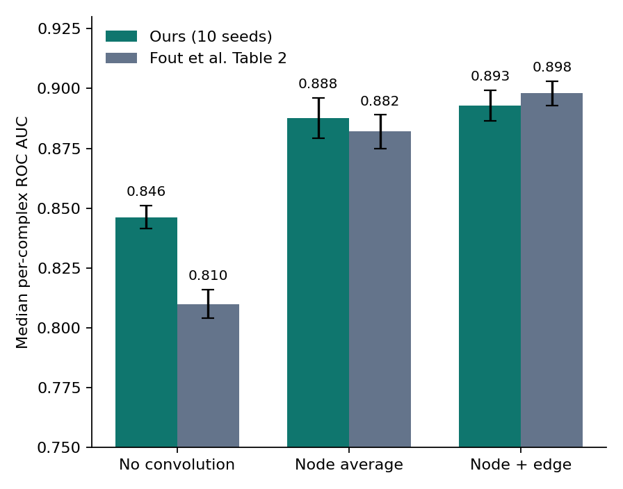
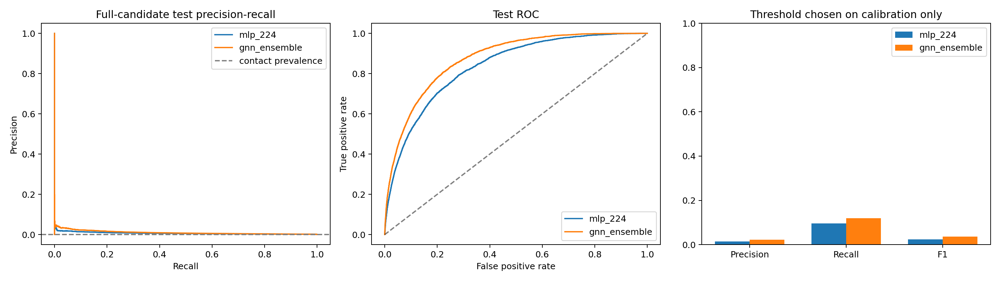

Which residues of two proteins will touch when they bind?
A PyTorch implementation of the graph-convolution method, trained and evaluated on the Docking Benchmark, with an edge-aware extension and a verified evaluation.
Base paper: Fout, Byrd, Shariat & Ben-Hur, NeurIPS 2017 · Data: Docking Benchmark 5 / DB5-Plus
Protein Interface Prediction using Graph Convolutional Networks
Fout et al., NeurIPS 2017
Proteins are separate. Residue features and neighbourhoods are computed here: no knowledge of the partner pose.
Only the 6 Å contact labels come from the docked complex. Cross-protein distances are never given as input.
hi′ = ReLU( WC hi + WN · meanj∈N(i) hj + b )
hi: residue i · N(i): its 20 nearest residues · WC, WN: separate learned weights for centre and neighbours.
MLP: same width, head, features and loss: no neighbour messages.
| Partition | Complexes | Used for |
|---|---|---|
| Official training | 140 | Learn weights + scaler |
| Checkpoint selection | 18 | Pick epoch (mean AP) |
| Threshold calibration | 17 | Fix F1 threshold |
| Official test | 55 | Final numbers, touched once |
The 18/17 split is a fixed seed-224 split of the 35 official validation complexes.
5,224,053
candidate pairs · 4,891 contacts (0.094 %)
No negative downsampling at validation or test.
| Setting | Value |
|---|---|
| Hardware | Kaggle 2 × Tesla T4, 385.4 s |
| Optimiser | AdamW, lr 3e-4, wd 1e-3 |
| Regularisation | dropout 0.25, grad clip 5 |
| Negatives | 10 per positive, resampled each epoch |
| Schedule | LR drops on validation plateau |
| Stopping | ≤150 epochs, patience 20 |
| Runs | MLP ×1, GNN ×3 seeds |
Best epochs were 7–10: validation AP peaked early while training loss kept falling: classic overfitting caught by early stopping.

Training loss keeps decreasing, but validation average precision stops improving after epoch 7–10, so the saved weights come from those epochs, not the last epoch.
| 2 layers · 55 test · 10 seeds | Our results | Published (Fout et al.) |
|---|---|---|
| No convolution | 0.846 ± 0.005 | 0.810 ± 0.006 |
| Node average (Eq. 1) | 0.888 ± 0.008 | 0.882 ± 0.007 |
| Node + edge average (Eq. 2) | 0.893 ± 0.006 | 0.898 ± 0.005 |
Median per-complex ROC AUC, mean ± std over 10 seeds. Published values taken from Table 2 of the NeurIPS paper.

| Model | Precision | Recall | F1 | ROC-AUC | AP |
|---|---|---|---|---|---|
| MLP, seed 224 | 1.39 % | 9.59 % | 2.43 % | 0.8354 | 0.00666 |
| GNN seed 224 | 1.94 % | 10.90 % | 3.29 % | 0.8646 | 0.00901 |
| GNN seed 225 | 1.75 % | 15.66 % | 3.15 % | 0.8626 | 0.00963 |
| GNN seed 226 | 2.05 % | 7.89 % | 3.25 % | 0.8673 | 0.00925 |
| GNN ensemble (3 seeds) | 2.16 % | 11.94 % | 3.66 % | 0.8746 | 0.01035 |

| Confusion (ensemble) | Count |
|---|---|
| True positives | 584 |
| False positives | 26,409 |
| False negatives | 4,307 |
Messages weighted by distance RBF and sequence-gap features, with 3 residual layers: a deeper node+edge model than the 2-layer node-average replica.
Equal-weight logit average, declared before test scoring; best F1 and AP of all runs.
F1 threshold calibrated on 17 held-back complexes, never on test labels.
Evaluated on all 5.2 M pairs, not on sampled negatives.
4,210 recomputed checks (rank-sum AUC, grouped AP, tie-aware P@10), max discrepancy 2.2 × 10⁻¹⁶.
Bootstrap CI for F1 2.78 – 4.80 % over 52 sequence-pair groups; prior-exposure and single-seed caveats disclosed.
| Requirement (topic row) | Our project | Status |
|---|---|---|
| Method: GCN | Node-average GCN + node-and-edge GCN, as in the paper | ✔ met |
| Learn ligand and receptor residue representations | Shared-weight encoder applied to each protein | ✔ met |
| Merge for pairwise classification | [u+v, |u−v|, u⊙v] → contact score | ✔ met |
| Edges = residue interactions | 20-nearest-neighbour residue graph | ✔ met |
| Dataset: “PMC Protein Interfaces 2024” | DB5 / DB5-Plus (the paper's benchmark) | ⚠ differs |
Full code, models, per-complex metrics, audit and report are in the submission ZIP.